충남대학교 컴퓨터공학과 김상하 교수님의 "컴퓨터 네트워크" 강의를 필기한 내용입니다.
다소 잘못된 내용과 구어적 표현 이 포함되어 있을 수 있습니다.
Application Layer
- 뭐 알고있어야 하는건 우리가 만드는 Application도 Application Layer에 포함되는거고 Application Layer에서 지원하는 여러 프로토콜들을 이용하게 된댄다
DNS
- 알다시피 문자열을 IP주소로 바꿔주는 프로토콜이다
- 뭐 옛날에는 hostfile이라는 것을 자기 컴퓨터에 저장해서 각자가 문자열과 IP를 매핑했었는데 이게 너무 개소리다 보니까 이러한 시스템을 만들게 된 것
- Transport Layer나 IP Layer랑 통신하기 위해서는 Socket Address를 알아야 되는데 Port number는 Well known이기 때문에 IP만 알아와야할 필요가 있는 것
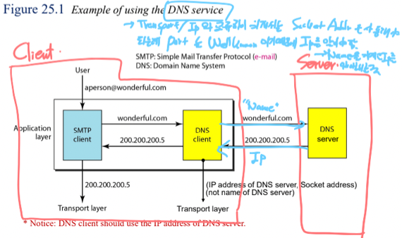
- 이런식으로 구동된다
- 이건 이메일을 보내는 예시인데 여기서 핵심은 Client쪽에 DNS Client Process가 있고 DNS Server로 요청을 보내서 IP를 알아오는 구조라는 것이다
Name Space
- 뭐 약간 추상적으로 말해서 각 Name(문자열 주소)들이 존재하는 공간이라는 건데
- 여기서 중요한 것은 Namespace 내에서 각각의 Name들은 겹치면 안된다는 것이다
- 약간 당연한거임 - Name - IP쌍이 유일하게 존재해야지 Name을 가지고 IP를 찾아내거나 IP를 가지고 Name을 찾아낼 수 있기 때문
- 이 Namespace에는 Flat Namespace와 Hierarchical Namespace가 있다
- Flat Namespace : Namespace전부를 하나의 기관에서 관리하는 것(Centrally Control)
- 당연히 이렇게 하면 하나의 DNS Server가 모든 것을 다 처리해야 되기 때문에 좋지 않다
- Hierarchical Namespace : 각각의 작명소에서 이름을 붙이고 마지막에 그 작명소의 이름을 추가해 이름이 같더라도 작명소가 다르면 다른 Name이 나오게 하는 것
- 뭐 요즘 DNS에서 사용하고 있는 방식이기 때문에 익숙할거다
- challenger라는 같은 이름을 붙일때 fhda.edu와 berkeley.edu에서 붙이게 되면 challenger.fhda.edu하고 challenger.berkeley.edu 가 되므로 다른 Name이 나오게 되는 것
- 이렇게 하면 작명소들로 일을 나눌 수 있기 때문에 Decentralized된다
Domain Name Space
- 현재의 DNS에서 사용하고 있는 Namespace를 말하는거임
- Hierarchical Namespace를 사용하고 Inverted Tree - 흔히 아는 그 트리 - 구조를 가지게 된다
- 트리의 최대 깊이는 128이 된다고 함
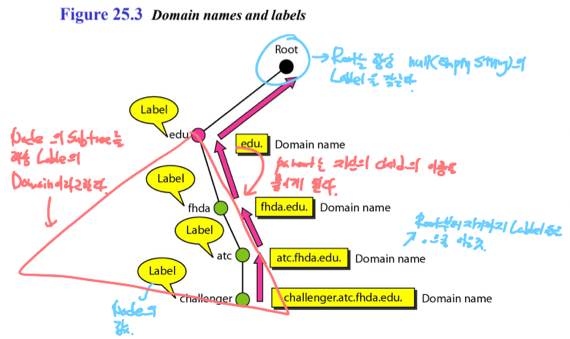
- 여기서 용어정리를 좀 해야 되는데
- Root는 트리의 최상단을 말하며 이놈의 Label은 null string이다
- Label은 각각의 Node에 붙는 이름이고
- Domain은 각각의 Node를 루트로 하는 Subtree를 일컫는다
- Domain Name은 Root부터 자신까지의 Label을 (.)로 이은 것을 의미함
- 그리고 Domain Name은 글자 그대로 Domain을 대표하는 이름이다 - Domain이 Subtree이므로 그 Subtree의 이름이 Domain Name이 되는거고 Root부터 해당 Subtree의 Root까지의 Label을 전부 (.)으로 이으면 되는 것
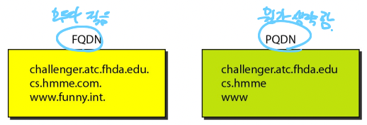
- 그리고 위 그림에서 왼쪽처럼 모든 Domain name을 생략없이 다 적은 것을 FQDN(Fully Qualified Domain Name) 이라고 함
- Root의 Label은 null string이므로 Domain name의 마지막이 (.)으로 끝나면 FQDN이 되는 것
- 오른쪽처럼 Domain name일부를 생략하는 것을 PQDN(Partially Qualified Domain Name) 이라고 한다
- 따라서 PQDN의 경우에는 마지막이 (.)으로 끝나지 않는다
Distribution of Namespace
- 일단 Name - IP쌍을 저장하는 서버를 Name Server라고 한다
- 그래서 Namespace에 있는 모든 Name - IP쌍을 어떻게 저장할거냐
- Name Server에 나눠서 저장하게 되는데 이렇게 하면 약간 문제점이 있다
- 일단 Tree에서 한 Node에 대응하는 Name Server가 자신의 Domain에 있는 모든 Name - IP를 저장하면 그의 Child는 아무것도 저장할게 없고
- 그렇다고 Child각각이 자신의 Domain을 저장하자니 그럼 Parent가 저장할게 없어진다
- 그래서 어떡할거냐
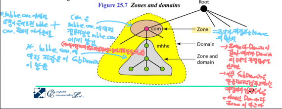
- 일단 Zone이라는 용어를 알아야 됨 - Zone은 어떤 Name Server가 책임을 지고(Authority가 있다고 표현함)있는 Name - IP의 범위를 일컫는다
- 보면 Domain이랑 비슷하지만 Domain이랑의 차이점은 만약 그 서버가 자신의 Domain에 있는 모든 Name - IP를 책임진다면 Domain이랑 Zone의 범위가 같아지지만 만일 그 서버가 자신의 자식에게 그놈의 Sub-domain에 대한 Authority를 넘겼다면 Domain이랑 Zone의 범위가 달라지게 되는 셈
- Authority를 넘기는건 자신은 그 범위의 Name - IP를 저장하지 않고 다른 Name Server에게 넘기되, 넘긴 Name Server의 Reference(IP)를 갖고 있는 것을 의미한다
- 그래서 위 그림처럼 되는거임
- .com의 Domain은 노란색이 되지만
- .mhhe한테 그놈의 Sub-domain의 Authority를 넘기면 이제 저 회색이 .mhhe의 domain이자 zone이 되는거고
- .com의 경우에는 그걸 제외한 갈색부분이 Zone이 되는 것
Root, Primary, Secondary Server
- Root Server는 말 그대로 Namespace에서의 최상위 Server이다
- 얘는 Child Name Server에게 모든걸 위임하고 자기는 하나도 Name - IP쌍을 하나도 갖고있지 않는다
- 대신 Child Name Server의 Reference만을 갖고있음
- Primary Server는 자신의 Zone에대해 Name - IP를 생성, 수정, 삭제 등을 전부 할 수 있는 Server를 말한다
- Secondary Server는 Primary Server의 백업용 Server라고 보면 된다
- 따라서, Primary Server의 데이터 복사본을 갖고 있되 얘네들을 직접 수정, 삭제, 추가하는것은 안됨
- 여기서 주의할건 Primary와 Secondary 모두 Authority는 갖고 있다는 것
- 하나의 Server가 Primary와 Secondary의 역할을 모두 하는 것도 가능하다 - 따라서 자시가 어느 Zone에 대해 Primary이고 어느 Zone에 대해 Secondary인지 등을 잘 기록해놔야 함
- 또한 Namespace Tree에서의 논리적 위치와 실제 서버의 물리적 위치는 같을 필요가 없다
- 예를 들어 어느 기관의 Domain을 관리하는 Name Server가 반드시 그 기관 내에 위치할 필요는 없다는 것
- Namespace Tree내에서의 위치와 Domain, Zone등은 논리적인 관계를 나타내는거지 그들의 물리적 위치는 관계없다
- 뭐 Primary에서 Secondary로 정보를 복사하는 것을 Zone Transfer라고 한댄다
Domains
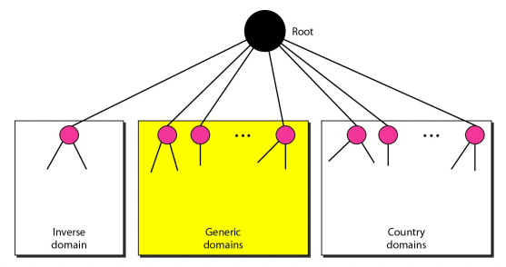
- 실제 DNS 시스템에서의 Namespace는 Inverse Domain, Generic Domain, Country Domain으로 구성된다
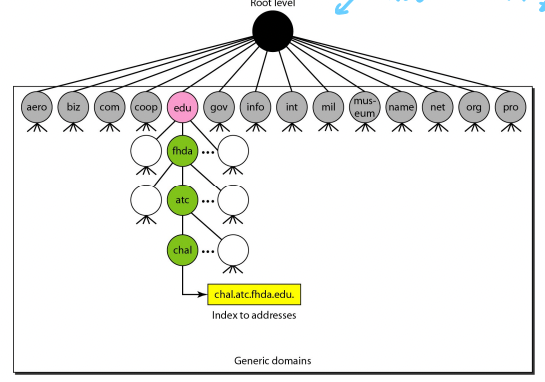
- Generic Domain : 지역과는 관계없는 도메인
- 위 그림 보면 알 수 있듯이 우리가 흔히 보던 .com, .net, .org등등임
- 근데 보통 미국을 중심으로 관리가 된댄다
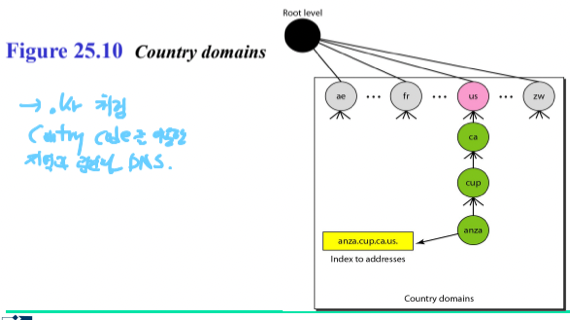
- Country Domain : 지역과 관련있는 도메인
- 이것도 뭐 흔히 접했을만한것들임 - .kr .uk등등의 지역을 나타내는 도메인
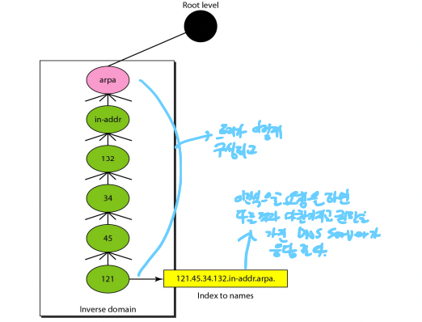
- Inverse Domain : 이건 별로 접해보지 못했을 텐데 IP를 Name으로 바꿔주는 도메인이다
- 그래서 보면 노란색 처럼 질의를 하면 트리를 쭉 쫒아가며 그에 맞는 Name을 찾게 됨
Resolusion
- 그럼 어떻게 DNS는 요청에 대한 응답을 하는가
- 일단 요청하는놈(DNS Client)을 Resolver라고 하는데
- 요청을 하면 다음과 같은 순서대로 찾는다
-
Resolver는 자신과 가장 가까운 DNS Server에게 물어본다
-
만일 가장 가까운 DNS Server한테 정보가 있으면 그걸 바로 알려주고
-
없을 경우에는 Iterative, Recursive 두가지 방법중 하나의 방법으로 찾게 된다
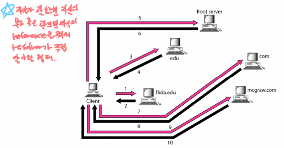
-
Iterative resolution은 자신한테 정보가 없다면 자신의 부모나 자식 중 정보를 가지고 있을만한 놈의 IP를 넘겨주고 Resolver가 그 IP로 다시 물어보고 이러한 방식을 반복하는 방법이다
- 위 그림처럼 된다는거임 - 자기가 모르면 그걸 알만한 전화번호를 주면서 이쪽으로 전화해보세여 하는셈
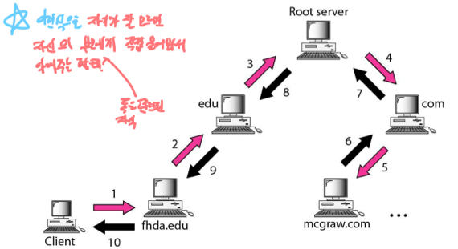
-
Recursive resoluvion은 자신한테 정보가 없다면 자신의 부모나 자식 중 정보를 가지고 있을 만한 놈한테 자기가 직접 물어보는 것이다
- 즉, 자기가 모르면 자기가 알아보고 다시 연락주겠다고 한 뒤에 딴사람한테 물어보고, 만약 그놈도 모르면 그놈도 직접 딴사람한테 물어보고 해서 알아내는 방식
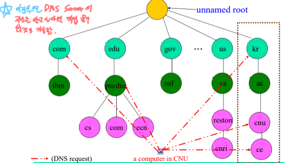
-
근데 위 그림처럼 DNS Server의 IP를 아는 경우에는 건너건너 알아내지 않고 직접 물어보는 것도 가능히다
- 같은걸 여러번 물어볼때 물어볼때마다 이런식으로 진행되면 낭비가 심하다 - 따라서 DNS Server는 응답을 Caching해놓았다가 그에 대한 요청이 들어오면 Cache에서 꺼내서 돌려주기도 한다
- 근데 이 경우에는 Unauthorize Mark를 해서 응답을 한다
- 왜냐하면 Cache에 있는 Name - IP의 경우에는 자신한테 Authorize가 있는게 아니기 때문에 얘네가 변경되거나 삭제되어도 알수가 없음 - 따라서 신뢰성은 좀 떨어진다는 것을 Resolver에게 알려주는 것이다
Format
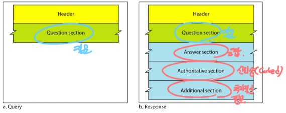
- 기능이 간단하기 때문에 Query와 Response두개의 메시지 포맷만 존재한다
- Query의 경우에는 그냥 Header와 Question section(요청내용)만 있고
- Response는 Header와 Question section외에도 Answer Section(요청에 대한 응답)과 Authoritative Section(응답자의 Zone에 요청에 대한 응답이 존재했는지 - 신뢰성), Additional Section(추가적인 정보 - DNS Server의 Domain Name, IP등을 같이 줘서 Resolution에 도움이 되도록 함)가 포함된다
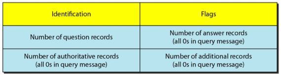
- 이건 Header의 정보인데 그냥 ID와 몇개의 Flag, 그리고 각 Section들의 Record 갯수가 몇개인지 정도가 들어간다고 알고있으면 된다
Records
- Record는 한번에 하나의 요청만 보내는게 아니고 마찬가지로 한번에 한개의 응답만 보내는게 아님 - 그 각각을 Record라고 부른다
- Question Section에 들어있는 Record들을 Question Record라고 부르고 여기에는 질문에 대한 Domain Name만 들어가게 된다
- Answer, Authoritative, Additional Section에 들어가는 Record들을 Resource Record라고 하고 DNS Server가 가지고 있던 Domain Name, IP등의 정보가 들어가게 된다
Registrars
- Registrars는 돈을 받고 Name - IP를 Namespace에 추가해주는 업체라고 생각하면 됨
DDNS
- DDNS(Dynamic Domain Name System) 은 IP가 변경되는 경우를 추적하기 위한 시스템으로
- IP변경이 감지되면 보안성이 높은 방법으로 바뀐 IP를 Primary DNS Server에게 보내 정보를 업데이트하고 Secondary에게도 알린다
Encapsulation
- DNS Message가 하위 계층으로 어떻게 전달되냐
- 일단 DNS의 Port number는 53번을 사용하고
- DNS Response Message의 크기가 512byte를 넘어갈거같으면 처음에 보낼때부터 TCP를 이용해서 보낸다
- 근데 만약에 DNS Response Message의 크기가 얼마인지 알 수 없을 때에는 일단 UDP로 보내보고, 응답이 512byte를 넘으면 응답자가 **Truncate Bit(TC Bit)**를 먼저 보내 통신을 TCP로 바꾸고 그 다음에 요청에 대한 응답을 전달하게 된다
- 이렇게 하는 이유는 TCP의 경우에는 3 Handshake를 하는 등의 과정이 있기 때문에 번거로움 - 가능하면 UDP를 사용하려 한다